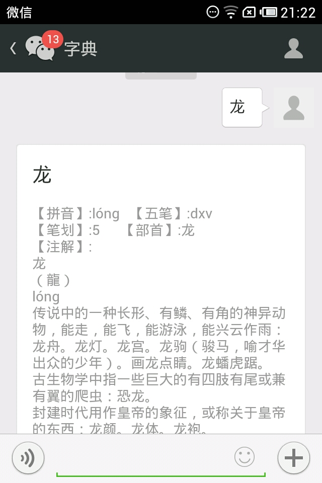
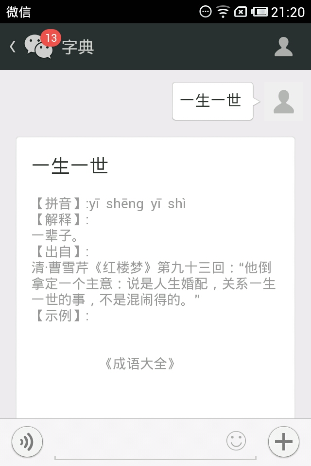
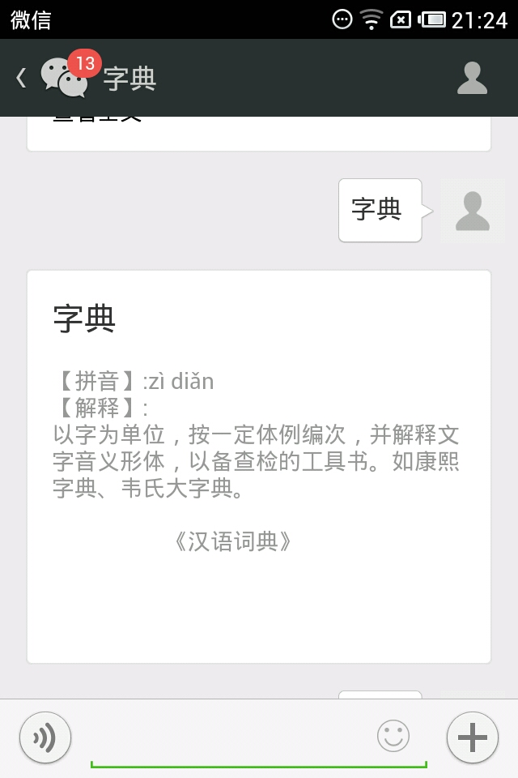
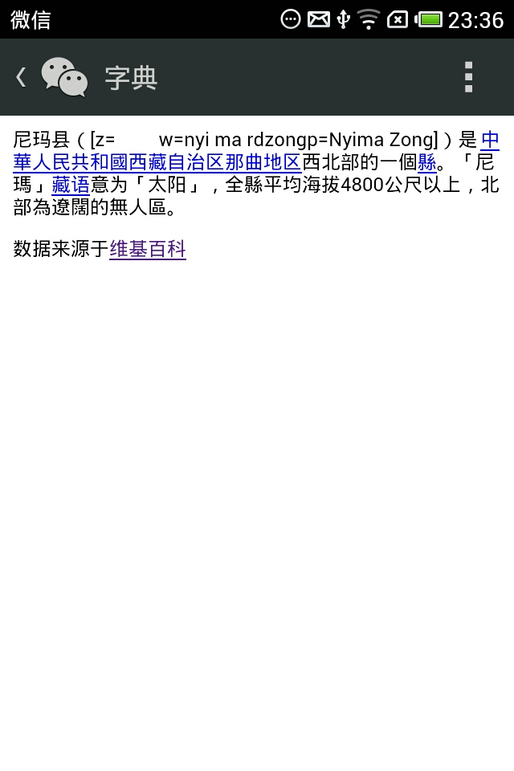

将来会书法字体。
|
|
|
| 收录《新华字典》五万个汉字的拼音、五笔、笔划、注解。只要录入一个单字。软件会自动回复祥细信息。 |  |
|  | 收录《成语大全》三万多个四字成语。 |
| 收录《汉语词典》二十万词组。 |  |
|  | 直接可以对维基百科数据联接并进行实时查找。 |
更新日记： 1.2014－3－10 增加中文转换为拼音功能。 2.2014－3－18 增加新华字典。 3.2014－3－25 增加成语大全及汉语词典。 4.2014－4－13 增加维基百科。